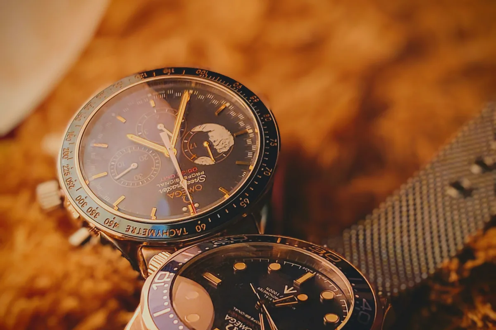
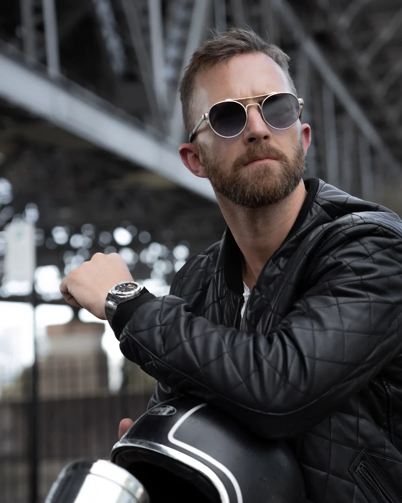

Somewhere out there — in a drawer, a landfill, a stranger’s forgotten box — sits what may be the single most historically important wristwatch ever made. Nobody knows where. It was the first watch worn on the surface of the Moon, and it disappeared not in a crash or a fire, but in the mail.
The watch was an Omega Speedmaster Professional, worn by Buzz Aldrin during the Apollo 11 moonwalk on 21 July 1969 — the first watch worn on the Moon. This is The Object of Desire, No. 002 — the series about pieces whose legend outgrew the metal. In July 2026, the world watched Aldrin’s personal collection cross the block at Sotheby’s. The headlines went to the money. The real story is the watch that wasn’t there.

The Watch That Walked on the Moon
Buzz Aldrin’s Speedmaster was the first watch on the Moon — and it got there by accident. Both Apollo 11 astronauts carried the NASA-issued Omega Speedmaster Professional, the only watch to survive the agency’s brutal qualification tests and, for decades, the only chronograph NASA certified for spacewalk use. But as the Lunar Module descended, its electronic timer failed. Neil Armstrong, the commander, made a quiet, unglamorous call: he unstrapped his own Speedmaster and left it inside the lander as a manual backup clock for the ascent burn that would carry them home.
So when Armstrong climbed down the ladder and spoke the most famous words of the century, his wrist was bare. A few minutes later, Aldrin stepped onto the surface wearing his — a reference ST 105.012, cinched over the bulk of his pressure suit. In that moment a humble, hand-wound chronograph became the first watch ever worn on another world. Not by grand design. By a broken timer and a redundancy plan.
The One That Got Away
Aldrin’s moonwatch reached the door of the Smithsonian and then simply disappeared. Armstrong’s Speedmaster and Michael Collins’s both made it to the National Air and Space Museum, where they sit today, untouchable and safe. Aldrin sent his to join them in the early 1970s. It never arrived.
Per NASA’s own records, Aldrin’s watch was lost in transit on its way to the museum, and its whereabouts are unknown to this day. No fire. No theft caught on camera. No auction. The first watch worn on the Moon simply slipped through the seams of the postal system and was gone — a piece so important that, formally, it likely still belongs to NASA and could never legally be sold anyway. Recovery claims have surfaced over the decades; none has ever been authenticated. The most valuable Speedmaster in existence has no price, because no one can find it.

Fourteen Seconds
Apollo 13’s crew came home because astronaut Jack Swigert timed a burn on his Omega Speedmaster. If Apollo 11 made the watch famous, Apollo 13 made it matter. In April 1970, an oxygen tank ruptured and crippled the spacecraft. To conserve power, the crew shut down nearly everything — including the onboard timers. To thread the needle home, they had to fire the descent engine for exactly fourteen seconds: too short and they would skip off Earth’s atmosphere into deep space; too long and they would burn in.
The only working clock left was Swigert’s Speedmaster. He pressed the pusher, they fired the engine, he stopped it at fourteen. The trajectory held. Three men came home because a mechanical wristwatch did exactly what it was built to do when everything electronic had gone dark. Omega received the astronauts’ own Silver Snoopy Award for it — the highest honour NASA gives an outside supplier.
Three men came home because a hand-wound wristwatch kept time when every electronic system had failed. That is not marketing. That is the résumé.
The Object of Desire · No. 002What Sold — and What It Says
Which brings us to July 2026, and Sotheby’s “Space Exploration” sale in New York. More than forty lots came from Aldrin’s own collection, and the room understood exactly what it was buying: not objects, but proximity to history.
Aldrin’s personal 1990 Omega Speedmaster Professional — a watch worth perhaps $4,400 on any other wrist — reportedly sold for about $44,800 (Man of Many), roughly six times its high estimate. And the top lot wasn’t a watch at all: it was the dented felt-tip pen and the broken circuit-breaker switch Aldrin jammed into place to arm the ascent engine and get himself and Armstrong off the Moon. That — a piece of plastic and a marker — reached $857,600, and the full 134-lot sale totalled roughly $2.86 million, as reported by collectSPACE and The Guardian.
Read those numbers next to the lost moonwatch and the lesson writes itself. A modern Speedmaster is a few thousand dollars. Aldrin’s modern Speedmaster was forty-five thousand. His actual moonwatch is beyond price and beyond reach. The metal barely moved. The story moved everything.
The Ones That Followed
Aldrin’s isn’t the only Apollo Speedmaster with an afterlife worth more than gold. In April 2025, the 18k gold Speedmaster Omega gave Neil Armstrong — number 17 of just 28 ever made, missing from public view for nearly half a century — surfaced and sold at RR Auction for $2,187,500, a world record for an astronaut’s wristwatch. The watches that went to space, or sat on the wrists of the men who did, have become the most fiercely chased objects in all of collecting — precisely because you cannot manufacture where they’ve been.

The One You Can Still Reach
Here is the quiet magic of the Speedmaster: the legend is priceless and lost, but the object is still made — to the same honest, hand-wound formula, on the wrists of people who will never leave Earth and don’t need to. A current Speedmaster Professional costs a fraction of a single Apollo lot, and it carries the same DNA that timed the fourteen seconds. That is a rare thing in collecting: a grail you can actually own.
Stories To Watch has never been a shop that lists watches; it is a place that reads the stories they keep. A Rolex tells you the time. A Speedmaster tells you where humanity was standing the first time a watch read it aloud on another world. If that’s the door your curiosity is opening, open it properly — know what the real ones cost, and find one from someone worth trusting.
Omega · The Object of Desire
Own the legend you can actually reach
The moonwatch is gone; the Moonwatch is still made. Check what a Speedmaster is really worth today, then find one from a verified source — or have us track down the exact reference you want.
Now Live · The Film
The Prologue — and Episode One to come
This story doesn’t end on the page. The Apollo 13 burn — the fourteen seconds a wristwatch held three lives — is where our film series is headed. The prologue is already live.
Watch the prologue → — the story continues on screen.The First Watch on the Moon — Your Questions
What was the first watch worn on the Moon?
An Omega Speedmaster Professional (reference ST 105.012) worn by Buzz Aldrin during the Apollo 11 moonwalk on 21 July 1969. Because Neil Armstrong left his own Speedmaster inside the Lunar Module as a backup timer, Aldrin’s became the first watch actually worn on the Moon’s surface. Both astronauts carried the same hand-wound chronograph — the only watch NASA had qualified for the flight.
Why didn’t Neil Armstrong wear his watch on the Moon?
The Lunar Module’s electronic timer had malfunctioned, so Armstrong left his NASA-issued Speedmaster inside the lander as a manual backup clock for the critical ascent burn. Aldrin wore his — which is why Aldrin’s Speedmaster, not the commander’s, was the first watch on the Moon.
What happened to Buzz Aldrin’s Moon watch?
It was lost in transit around 1971 while being sent to the Smithsonian’s National Air and Space Museum, and has never been recovered. Per NASA’s own records the whereabouts of Aldrin’s Speedmaster remain unknown — arguably the most historically important wristwatch ever made, and it is simply gone. Occasional recovery claims have surfaced over the decades, but none has been authenticated.
How much did Buzz Aldrin’s watches sell for at auction?
At Sotheby’s “Space Exploration” sale in New York in July 2026, Aldrin’s personal 1990 Omega Speedmaster Professional reportedly sold for about $44,800 — roughly six times its high estimate. The auction’s top lot, the Apollo 11 felt-tip pen and broken circuit-breaker switch, reached $857,600, and the full 134-lot sale totalled roughly $2.86 million.
How did the Omega Speedmaster save Apollo 13?
After the Apollo 13 explosion in April 1970, onboard timers were shut down to conserve power. Astronaut Jack Swigert used his Omega Speedmaster to time a critical 14-second engine burn that corrected the crew’s trajectory home. For its role, Omega received the astronauts’ Silver Snoopy Award.
The Honest Takeaway
You will almost certainly never own a watch that went to the Moon — and the one that got there first, no one owns at all. But that was never the point of this piece. The point is the lesson the lost Speedmaster teaches, and it applies to every watch you will ever consider: the provenance is the price. Buy the story you believe in, understand which part of it is true, and remember that with the greatest objects, the myth is not a footnote — it is the value itself.
Sources: NASA history (the Apollo Speedmasters and the lost Aldrin watch); Sotheby’s “Space Exploration” sale, New York, July 2026, as reported by collectSPACE, The Guardian and Man of Many. Prices are reported hammer results including buyer’s premium, in US dollars, as of July 2026.
The Object of Desire
Read the story, know the truth — then find the one you can own
Independent stories · Real market prices · Verified dealers